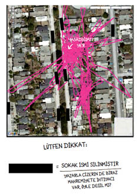
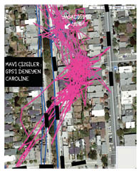
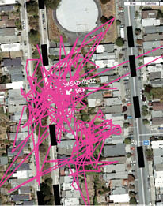

6
Tibby on iki saat sonra döndü.
“Munya bunya munya munya,”1 dedim, onu kucağıma çektim. “Nerelerdeydin yakışıklı erkeğim benim?”
Fibby onaylamaz bakışlarla bizi süzerken, Tibby’nin çenesini muzaffer bir edayla kaşıdım, gözlerinin zevkle parlamasını seyrettim ve tasmasını çıkardım. GPS avcuma kaydı. Çikolata büyüklüğündeki bu gösterge panelinden büyülü gibi ışıldayarak bilgisayara, oradan da ekrana geçecek tek çizgiyi şimdiden görüyordum. Evimizden Yaldızlı Yer’e giden yolu gösterecek o çizgi. Adresi bulunca da hemen harekete geçecek, arabaya atladığım gibi olay yerine giderek koltuk değneklerimi tehditkar bir havayla savuracaktım. GPS cihazını faillerin önünde sallayıp, “İnkar etmeyin,” diyecektim. “Kanıtlarım burada.”
Fibby, bilgisayarın önüne her zamanki gibi bacağım bir tarafa dayalı, koltuk değneklerim sandalyeye yaslanmış olarak yerleşmemi bekledi, sonra sıçradı ve uyluklarımın üstünde Lipizzan cinsi bir at gibi volta atmaya başladı. Güzergahı görmek için sabırsızlanıyormuşçasına miyavladı, ama aslında bunu zaten bildiğinden şüpheleniyordum. Hatta belki de başından beri biliyordu. Tibby’nin gezip tozmalarını Fibby’ye anlattığı yönündeki bu teorim Wendy tarafından küçük, inanmaz bir gülümseme ve havaya kalkmış tek bir kaşla karşılanmıştı.
Deli kedi sahibi, diyordu ifadesi.
Deli kedicik sahibi diye düzeltmek istiyordum onu.
Fibby kucağımdayken bilgisayarın tuşlarına bastım. Tibby, ikizinin beni sömürge gibi ele geçirdiğini görünce halının en sevdiği yerine gitti. dikkatimin odak noktasında hâlâ kendisinin olduğu gerçeğinden bihaber uzandı.
Ekran aydınlandı. Gözlerimi kırpıştırdım. Tibby’nin izini, o düz ve gerçek çizgiyi görmeyi bekliyordum. Onun yerine şunu buldum karşımda:

“Amanın,” dedim.
Wendy de, “Amanın,” diye yankıladı beni.
Tek bir düz çizgi mi? Hayır.
Sanki bir anaokulu çocuğu, önce enerji çikolatası verilip sonra da eline bir pastel boya tutuşturularak ortalığa salınmıştı.
GPS cihazını tekrar Tibby’nin tasmasına taktık. Kedim dışarı çıktı, saatler sonra döndüğünde cihazı bir kez daha boynundan alıp bilgisayara bağladım. Bu defa mutlaka açık seçik bir çizgi olacaktı.
Onun yerine bu vardı:

Bu kedi adımları cümbüşünü nasıl yorumlayacağıma dair en ufak bir fikrim yoktu. Caddenin karşısına geçip batıya doğru giden çizgileri mi izlemeliydim? Sokağımızın dışına çıkmıyor gibi görünen çekirdeğe mi odaklanmalıydım? Ya doğuya, şu sokak kedisi çetesine doğru giden çizgi? Başım dönüyordu. GPS cihazını şarj edip yeniden Tibby’nin tasmasına taktım. Ellerim belimde, somurtarak ona daha açık sonuçlarla gelmesini söyledim. Lütfen yani!
Düşündüğümüzden daha zor olacaktı.

1 Bebek dilinde “Merhaba hayatımın ışığı, ruhumun kediciği.”